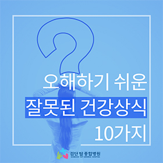

서브페이지 상단이미지
건강정보
앞으로 더 나은 삶을 위한 건강의 모든것
건강정보
-
오해하기 쉬운 잘못된 건강상식 10가지

X
<>-
속이 쓰릴 때는 우유를 먹는 것이 좋다?
우유는 약알칼리성이어서 일시적으로는 위의 산성분을 안정시키는 것 같지만, 우유의 단백질 분해를 위해 더 많은 위산이 분비됩니다.
위가 안좋은 경우, 우유 섭취를 주의하는 것이 좋습니다. -

식후 바로 양치질을 하는 것이 좋다?
콜라, 사탕, 탄산음료 등의 산성분이 많은 음식을 섭취한 경우에는 바로 양치를 하면 오히려 치아의 법랑질과 상아질이 손상될 수 있습니다.
식후 20~30분 후에 하는 것이 좋습니다. -
목이 뻣뻣하면, 고혈압이다?
목이 뻣뻣해지고 뒷목이 뻐근해지는 증상이 고혈압 때문인 경우는 거의 없습니다. 고혈압은 특별한 증상이 없으며, 목이 뻐근한 것은 목 근육의 수축으로 발생한 가능성이 큽니다.
안정을 취하고, 마사지를 해주는 것이 증상을 완화하는데 좋습니다. -
저녁 6시 이후에는 금식을 하는 것이 숙면에 좋다?
숙면을 위해서는 트립토판이라는 아미노산을 통해 수면 유도호르몬이 분비되어야합니다.
이 호르몬은 잠들기 전 최소 3시간 이전에 식사를 해야 잘 분비됩니다. -
자주 샤워하는 것은 좋지 않다?
샤워를 자주 하는 것은 몸에 좋은 유익균까지 씻겨나가 박테리아나 바이러스 세균 등의 서식이 쉬워진다고 합니다.
잦은 샤워는 오히려 견강에 적신호를 일으킬 수 있다고 합니다. -
영양제로 암 예방을 할 수 있다?
종합비타민과 같은 영양제로 암을 예방하거나 줄일 수는 없습니다.
하지만, 부족한 영양소를 채울 수 있어 건강을 위해 꾸준히 섭취하는 것이 좋습니다. -
검은색 음식을 먹으면 탈모 예방을 할 수 있다?
검은 콩이나 깨 등의 검은색 음식을 먹으면, 탈모 예방에 효과가 좋다고 알려져 있는데요.
이러한 음식들은 단백질 때문에 모발의 성장에는 도움이 되지만, 탈모에는 효과가 없다고 합니다. -
검은색 음식을 먹으면 탈모 예방을 할 수 있다?
근시의 80%는 선천적인 요인으로 발생합니다.
가까이에서 책이나 TV를 보는 것은 눈 건강에 나쁘지만, 무조건 근시를 유발하지 않습니다. -
감기에는 비타민C를 많이 먹는 것이 좋다?
과일이나 채소를 통해 섭취하는 것은 좋지만, 비타민C정제나 과립은 많이 먹으면 설사나 요로결석을 유발할 수 있습니다. -
땀을 많이 흘렸을 때는 염분을 섭취해야 한다?
땀을 흘리게 되면, 수분이 빠져나가면서 채내에 염분 농도가 높아집니다.
여기에 염분을 섭취하게 되면, 수분이 위와 장에 집중되면서 탈수현상이 심해집니다.
-
-
소화불량이라면? 소화에 좋은 음식
-
다리에 핏줄이?! 하지정맥류에 대하여
-
숙면에 좋은 음식
-
관절 건강 영양소로
튼튼한 관절 만들기 -
운동능력향상에 좋은 음식들
-
물 하루에 8잔 이상 매일 마셔야 좋을까?
-
뼈와 근육에 좋은 비타민D의 음식
-
함께 먹으면 해로운 최악의 궁합
-
온 가족 건강지킴이
유산균 이야기